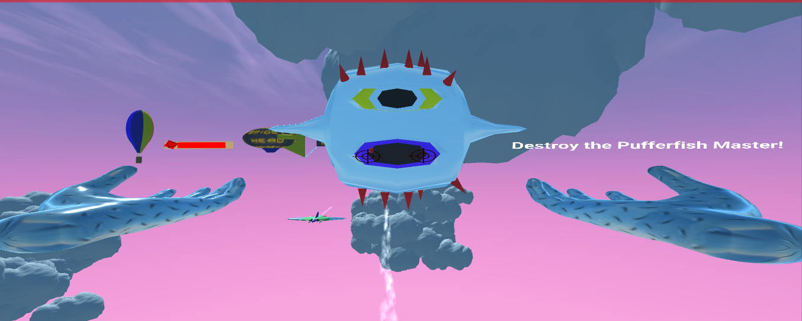
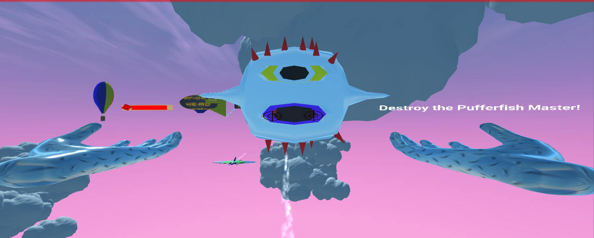

You are a superhero with web powers. You must battle your way through by collecting weapons, deflecting pumpkin bombs and destroying PufferFish Robots! There are 3 levels for the user to play!
Level1: The weapons got stolen by the enemies. You must collect them by swinging the boxes into an airplane!
Level2:An innocent target practice shooting at balloons turns into a showdown between you and MegaGoblin. Destroy the pumpkin bombs before you reach zero health!
Level3:You are 10 000 feet above ground standing on a Spidey plane. PufferFish robots are chasing you. Destroy them before they destroy you!


 Then I do a test run with basic shapes and then will either import fbx objects from the asset store or create them from Blender. Objects made in blender included balloons, web, airplane, puffer fish villian
Then I do a test run with basic shapes and then will either import fbx objects from the asset store or create them from Blender. Objects made in blender included balloons, web, airplane, puffer fish villian
 My main menu looked like my draft and I was very proud as I got the button interactions and scene changes functioning
My main menu looked like my draft and I was very proud as I got the button interactions and scene changes functioning
 I also got a websling scene working and the concept matched my draft. I programmed the logic to allow the user to swing the boxes into a collider that would push the box into the airplane
I also got a websling scene working and the concept matched my draft. I programmed the logic to allow the user to swing the boxes into a collider that would push the box into the airplane
 Target practice scene was the most satisfying and hardest to implement as I added counters when the user hit the balloon targets. After the counter htis a number, the goblin would fly out of a portal. Based on a timer, the goblin would throw pumpkin bombs. I also implemented joints on the mail box to make the target practice more fun
The last level where the pufferfish appeared, I had to apply materials to different parts of the pufferfish which was made in blender. I used abstract classes to add different health to different pufferfish. I also implemented a health bar for the pufferfish. Having the airplane moving worried me because of locomotion, but since the user was at the BACK of the plane and staring to the front only, locomotion ended up not being an issue

Target practice scene was the most satisfying and hardest to implement as I added counters when the user hit the balloon targets. After the counter htis a number, the goblin would fly out of a portal. Based on a timer, the goblin would throw pumpkin bombs. I also implemented joints on the mail box to make the target practice more fun
The last level where the pufferfish appeared, I had to apply materials to different parts of the pufferfish which was made in blender. I used abstract classes to add different health to different pufferfish. I also implemented a health bar for the pufferfish. Having the airplane moving worried me because of locomotion, but since the user was at the BACK of the plane and staring to the front only, locomotion ended up not being an issue
